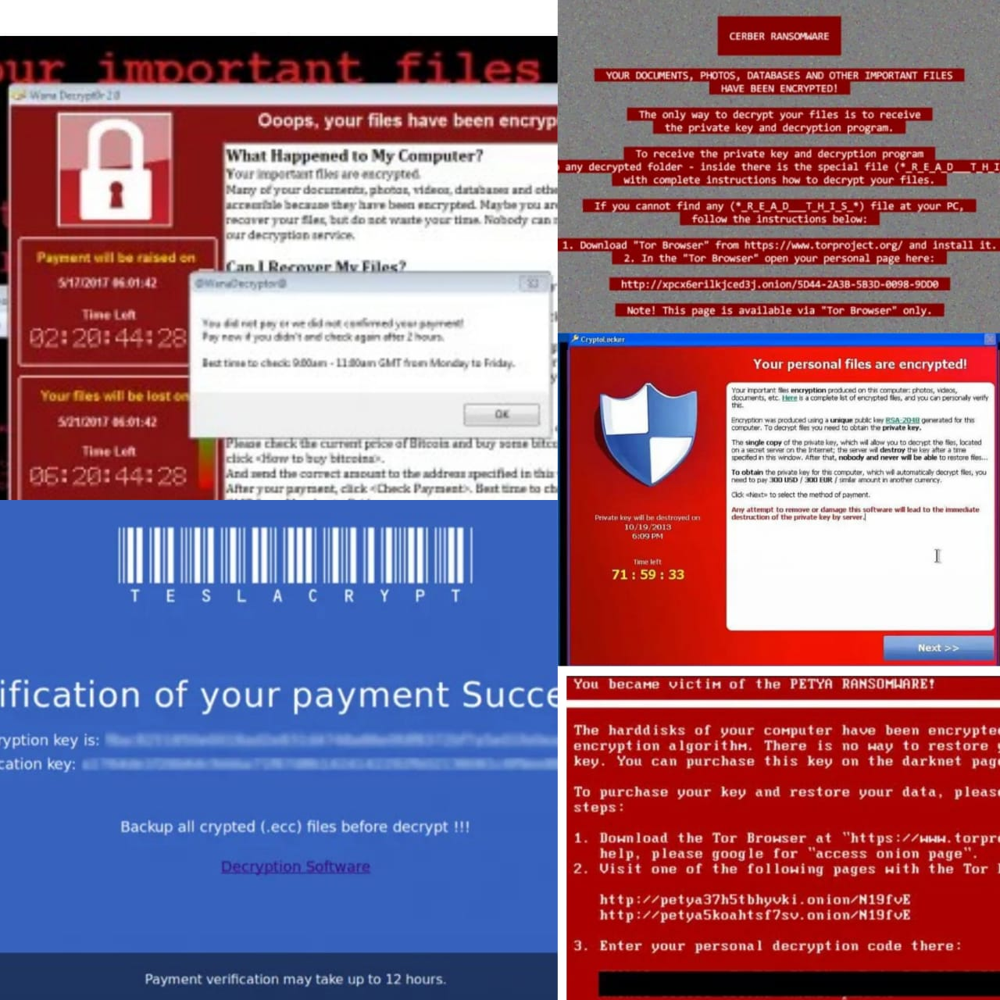
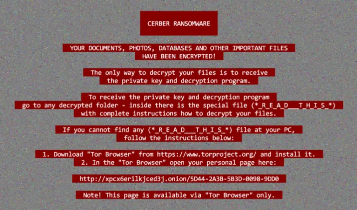

Volver
Ataques de ransomware más populares de los últimos años

CriptoLocker
CryptoLocker es un ransomware tipo troyano dirigido a ordenadores que ejecutan el sistema operativo de Microsoft. Un malware que se extendió en el año 2013 y que para muchos es el que marcó el inicio de la era de este tipo de malware. La manera de distribuirse es a través de un archivo adjunto en un mensaje de correo electrónico o bien accediendo a los equipos a través del puerto remoto 3389.

Una vez que se aloja en el equipo, cifra ciertos tipos de archivos almacenados en el disco duro usando criptografía de clave pública RSA y guarda la clave para el descifrado en los propios servidores del malware. Como es habitual, en el mensaje mostrado una vez instalado se muestra la fecha límite y cantidad de bitcoins a pagar por el rescate. Se estima que fue capaz de infectar más de medio millón de ordenadores, a lo que le ayudaron también algunos de sus clones como CryptoWall, Crypt0L0cker y TorrentLocker.
TeslaCrypt
TeslaCrypt fue el ransomware que estuvo detrás de casi la mitad de los ataques producidos con este tipo de malware en todo el mundo durante el año 2016. Un malware que se dirigía sobre todo a archivos relacionados con los videojuegos, títulos descargados, contenidos descargables, mapas, etc.

El rescate que solicitaba a cada una de sus víctimas era de 500 dólares en bitcoins, lo cual hace pensar que los responsables de TeslaCrypt consiguieron ganar mucho dinero con su creación. Después de un tiempo, los propios creadores hicieron pública la clave para conseguir el descifrado poco después de que ESET desarrollase una herramienta capaz de limpiar los equipos infectados por este ransomware.
Cerber
Cerber surgió como servicio RaaS, es decir como una especie de programa de suscripción o afiliación entre ciberdelincuentes. Un ransomware que cualquier puede comprar y distribuir obteniendo un porcentaje del beneficio obtenido. Este malware si dirigió a los usuarios de Office 265 y era distribuido a través de una campaña de phising.

En un mensaje de correo electrónico con un documento de Office adjunto es como llegaba Cerber a sus víctimas. En el momento que era abierto dicho documento, el malware se ejecutaba en segundo plano sin que se diesen cuenta los afectados y cuando se querían dar cuenta, se encontramos con el mensaje de que habían sido víctimas de Cerber, donde se solicitaba el rescate y los pasos a seguir para eliminar el malware.
Petya y NotPetya
Petya es un malware de tipo ransomware que se distribuyó como troyano usando el famoso sistema de almacenamiento en la nube Dropbox, mientras que su evolución, NotPetya, lo hizo a través del envío de un mensaje de correo electrónico que llevaba adjunto un archivo de Office que se encargaba de instalar el malware en segundo plano en el equipo de las víctimas.

Una vez que los archivos estaban cifrados, el ordenador infectado quedaba inutilizable y se solicitaba un rescate de 300 dólares en bitcoins. En el caso de Petya, en lugar de cifrar ciertos archivos del disco, aumentaba aún más el daño en el equipo al impedir el arranque del ordenador, ya que apuntaba directamente a los archivos responsables del arranque del equipo.
WannaCry
WannaCry es uno de los ataques más populares y recientes, ya que tuvo su gran protagonismos a mediados del año 2017. Concretamente, fue en el mes de mayo cuando se registró un ataque a escala mundial que afectó también a importantes empresas españolas como Telefónica, Iberdrola o Gas Natural, entre otras.
Wannacry permitía atacar ordenadores con el sistema operativo Windows, lo que hizo que Microsoft se pusiera manos a la obra para lanzar un parche que solucionase las vulnerabilidades que habría aprovechado este ransomware para afectar a tantos equipos en todo el mundo.

Una de las características de este malware es que los archivos eran cifrados con la extensión .WCRY, mientras que el rescate solicitado para cada equipo infectado era de 300 dólares si se pagaba en los siguientes tres días, mientras que si no se hacía el pago, el rescate se duplicaba con el paso del tiempo